, and neither can, since
, and neither can, since Let
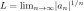
exist. If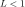
the series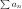
converges absolutely; if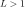
it diverges.Suppose and pick
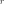
with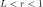
. There is with
with
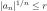
, that is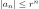
, for all . The geometric series
. The geometric series 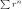
converges, so by comparison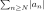
converges, and adding the finitely many earlier terms changes nothing. If then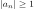
for infinitely many , so the terms do not tend
to
, so the terms do not tend
to  and the series diverges.
and the series diverges.
Let
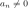
for all and let
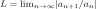
exist. If the series converges absolutely; if it diverges.
Suppose and pick with . There is with
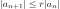
for, whence by induction
for every  .
Comparison with the convergent geometric series
.
Comparison with the convergent geometric series
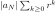
gives absolute convergence. If then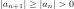
for all large, so the terms cannot tend to .